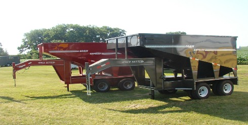
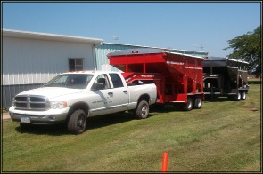
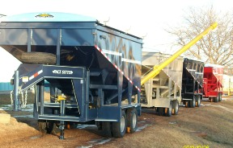
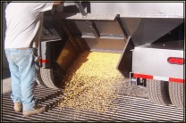
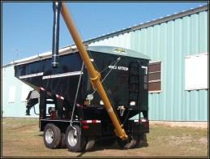

More bushels. Fewer trips.
The Pace Setter Grain Express gooseneck grain trailer and 400- and 450-bushel grain wagons. No hydraulics, great braking and fast gravity unloading.
Two sizes for your operation

Pace Setter 400-bushel wagon [model name, e.g. SGW]
The standard box holds about 410 bushels without extensions.
Build this wagon →
Pace Setter 450-bushel wagon [model name, e.g. SGW12]
Extensions and larger axles take the Grain Express up to 450 bushels.
Build this wagon →By the numbers
| Capacity | About 410 bu standard box; up to 450 bu with extensions |
|---|---|
| Overall size | 18′ long, 9′2″ high (without roll tarp or extensions) |
| Box | 14′ long, 8′ wide |
| Empty weight | 4,470 lb |
| Axles | Standard: two 10k, 8-bolt, oil-bath axles on heavy-duty leaf springs with oscillating equalizer. Available with 10,000, 12,000 or 16,000 lb axles |
| Brakes | Heavy-duty electric brakes on both axles; axle brake wires sealed with a 3M connector |
| Unloading | Gravity, out the back; top-wind jack raises the 30″-wide end gate; timed empty under 89 seconds |
| Seed tender | Optional 16′ foldable poly cup rear auger, on and off in minutes |
| Paint | Acid etch wash, 2 coats self-etching primer, 2 coats polyurethane with hardener, clear-coated finish |
| Tongue weight (approx.) | 300 bu: 10% = 2,127 lb · 350 bu: 11% = 2,647 lb · 400 bu: 15% = 4,030 lb · 450 bu: 15% = 4,450 lb |
| Lead time | [K&O to confirm current build time; the old site says 4–6 weeks depending on season] |
Source: Grain Express FAQ on komfgco.com. Legal requirements vary by state; Iowa and Illinois list it as an implement of husbandry. Check with your local DOT.


Grain Express FAQ
How much weight on my truck?
About the same as a 24′ livestock trailer or a 25′ flatbed of hay. Weight shifts toward the front as it fills, so a smaller tow vehicle can pull 300 bushels and a larger one can pull more.
Can I pull it in the field?
It was designed as a farm-to-market vehicle, and owners report moving it easily where a normal wagon would not budge, including fields and muddy surfaces.
Does wet grain flow?
Corn at up to 25% moisture flowed right through with no problem.
Why are the axles spread?
To comply with the “rubber” law in some states. The spread axles also take the bucking out of the ride on broken roads.
In their words
Comments published on the current komfgco.com Grain Express page. [K&O to confirm these may be republished]
“We could get twice the work done in half the time.”
“I was going to buy another wagon but am I glad I bought this thing instead.”
“It emptied moist beans better than most of my wagons.”
“I felt safer with my Grain Express than I did driving the neighbor’s semi.”
Make it yours
- Sandstone (light silver/gold metallic)
- Silver Metallic
- Light, Medium and Dark Gray Metallic
- Midnight Sparkle (almost black metallic)
- Brilliant Red
- Dark Blue Metallic
- Shiny Black
- Brent Green or special colors at added cost
Color list from the current site. [confirm current colors]
Financing available? Ask us.
Spread the cost of a new trailer or grain wagon. Tell us you are interested when you request a quote and the shop will walk you through the options. [K&O to confirm financing partner and programme; no rates are shown on this site]